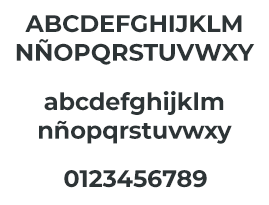
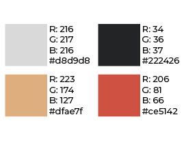

MICROSITIO
MARCA
Se creo un isologo para el emprendimiento del personaje. El mismo consiste en una sintesis de la Abuela Fa, con su característico rodete, y, por debajo, su nombre. Estos dos elementos no pueden separarse ya que funcionan en conjunto.
TIPOGRAFIA
La tipografía escogida es una sin serif para facilitar la lectura, esta en su variante bold para que destaque y llame al atención. El nombre del emprendimiento está completamente en mayúsculas y hace alusión directamente al personaje.

PALETA CROMÁTICA
La paleta cromática esta compuesta por 4 colores no muy saturados. Para la sintesis de la abuela se usaron 3 colores, y para el nombre se utilizó un rojo que representa su nacionalidad China.
